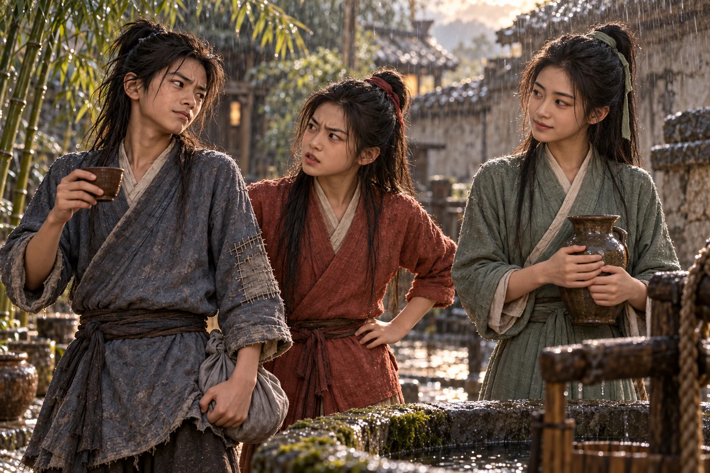
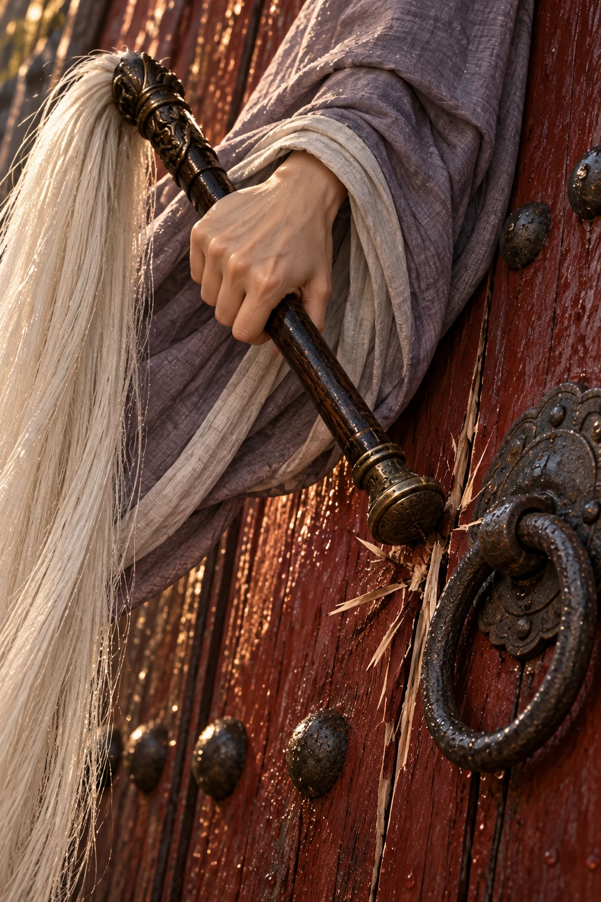
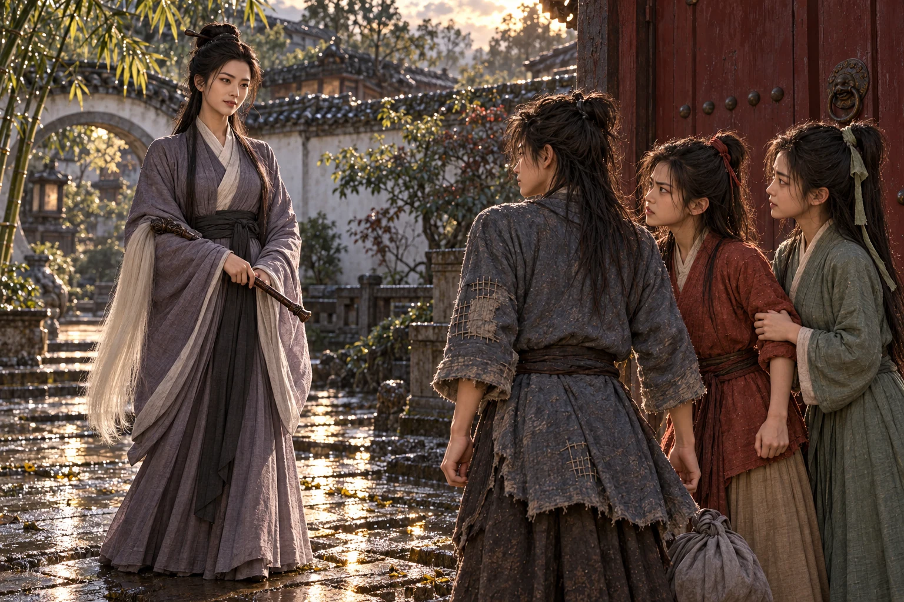

Bayangan atap jatuh melintang di jalan ketika Dani mencium bau masakan dari balik tembok putih.
Ia berhenti untuk mengencangkan ikatan sepatunya. Ikatan itu sebenarnya belum lepas. Perutnya berbunyi sebelum ia selesai berjongkok, cukup keras untuk membuatnya melirik ke kiri dan kanan.
Tak seorang pun memperhatikan. Itu agak melegakan, sekaligus mengecewakan.
Sisa roti dari rumah telah habis di perjalanan. Remah terakhir masih tersangkut pada lipatan kain pembungkus; tadi ia sudah mengaisnya dengan kuku. Kini kain itu terselip kembali di dalam baju, bersih dari segala sesuatu yang dapat dimakan.
Di balik pintu samping yang terbuka, ember beradu dengan bibir sumur.
Dani bangkit. Rumah itu jauh lebih besar daripada rumahnya, tetapi bukan kemegahannya yang membuat ia mendekat. Ada air di sana. Ia bisa meminta air tanpa harus menjelaskan mengapa ia tidak punya tempat pulang.
Ia baru meletakkan sebelah kaki di ambang ketika sebuah suara menghentikannya.
“Hei. Mau ke mana?” tanya Wushuang.
Gadis di dekat sumur itu kira-kira setahun lebih muda darinya. Wajahnya bulat telur, alisnya melengkung tajam ketika melihat sepatu Dani meninggalkan lumpur. Rambut hitam yang diikat dengan kain merah tua bergeser di bahu. Ia mengenakan baju merah kesemek yang lengannya digulung sedikit; satu tangannya masih memegang tali ember.
Dani melihat air mengilap pada batu sumur, lalu menatap gadis itu lagi. “Kalau ingin mencuri sumurnya, aku akan membawa gerobak.”
Tali ember berhenti bergerak.
“Siapa bilang kau cukup pintar untuk membawa gerobak?” tanya Wushuang.
Ia mendapat balasan terlalu cepat. Dani merapatkan mulut, kemudian mengangkat buntalannya.
“Aku minta air,” kata Dani.
“Nah. Bisa juga bicara begitu,” balas Wushuang.
Di bawah serambi, seorang gadis berbaju hijau pucat meletakkan kendi di pinggir bangku. Ia sedikit lebih tinggi daripada gadis pertama, dengan wajah lebih ramping dan rambut yang terikat rapi. Tatapannya bergerak dari bibir Dani yang kering ke buntalan kelabu, tanpa berhenti terlalu lama pada bajunya yang bertambal.
“Wushuang, embernya hampir jatuh,” ujar Cheng Ying.
Lu Wushuang menoleh. Tali telah melorot satu jengkal di tangannya. Ia buru-buru menariknya, dan ember menghantam sisi sumur dengan bunyi tumpul.
Dani menyambut pegangan ember ketika benda itu sampai di bibir sumur. Wushuang menegang, mengira ia akan merampasnya, tetapi Dani hanya menahan sisi bawahnya agar air tidak tumpah. “Berat juga barang yang tidak boleh kucuri ini.”
“Letakkan di situ,” perintah Wushuang.
“Terima kasih,” ucap Cheng Ying.
Dani menoleh ke arah suara yang kedua. Gadis berbaju hijau menyodorkan cawan. Ia mengambilnya dengan tangan kanan; tangan kirinya tidak melepaskan buntalan.
Air pertama terasa begitu dingin hingga giginya ngilu. Ia minum terlalu cepat, tersedak, lalu memalingkan muka sebelum Wushuang sempat berkomentar.
Tentu saja Wushuang tetap berkomentar.
“Sumurnya tidak akan lari,” kata Wushuang.
“Aku sedang memastikan,” balas Dani.
Cheng Ying mengangkat kendi untuk mengisi cawannya lagi. Ada gerakan kecil di sudut bibirnya, cepat sekali hilang.
“Kau boleh tertawa. Airnya tidak akan kukembalikan,” ujar Dani.
“Aku belum meminta,” balas Cheng Ying.
Kali ini Wushuang mendengus. Dani memandang mereka bergantian dan memutuskan minum adalah pekerjaan yang lebih aman.

“Aku Cheng Ying. Ini Lu Wushuang,” ujar Cheng Ying.
“Aku bisa menyebut namaku sendiri,” sela Wushuang.
“Tadi kau sibuk menjaga sumur,” sahut Dani.
Wushuang menaruh kedua tangan di pinggang. Alisnya naik, seolah telah menemukan satu kesalahan baru yang perlu dibereskan. “Dan namamu?”
“Dani Moan,” jawab Dani.
“Hanya itu?”
“Kalau kepanjangan, nanti airku keburu habis.”
Ia mengangkat cawan, tetapi Cheng Ying tidak menuang lagi. Gadis itu menunggu sampai ia menurunkannya.
“Kau datang dari jauh?” tanya Cheng Ying.
Dani memutar cawan di antara jari. Di rumah, mangkuk ibunya masih di rak. Ia mendadak melihat retakannya dengan sangat jelas, lalu memaksa pandangannya kembali pada bibir cawan yang utuh. “Cukup jauh untuk haus.”
Cheng Ying mengangguk kecil. Tidak ada pertanyaan berikutnya. Ia mengisi sedikit lagi, seolah jawaban Dani telah lengkap.
Dari bagian dalam rumah terdengar kayu diseret. Wushuang langsung memandang serambi. Senyumnya yang baru separuh terbentuk menghilang.
“Kalian sedang pindah?” tanya Dani.
“Tidak,” jawab Wushuang.
Jawabannya terlalu keras untuk pertanyaan sependek itu.
Cheng Ying meletakkan kendi dengan hati-hati. Dani memperhatikan daun jendela di ujung serambi: tertutup, padahal cahaya siang masih cukup terang. Di bawahnya ada bangku yang bergeser miring, meninggalkan bekas panjang pada lantai berdebu.
Ia menelan air terakhir. Urusan orang yang memberinya minum tidak perlu menjadi urusannya juga.
“Pintu depan di sebelah mana? Aku tidak mau mengelilingi tembok sampai haus lagi,” kata Dani.
“Keluar lewat sini, lalu ke kanan. Jalan besarnya di depan,” jawab Cheng Ying.
Wushuang mengambil cawan darinya. “Dan jangan tinggalkan lumpur lagi.”
Dani melihat jejak sepatunya, kemudian batu-batu sumur yang sejak tadi basah oleh ember mereka.
Ia sudah membuka mulut. Cheng Ying lebih dahulu mengangkat alis, lembut, hampir seperti permintaan.
Dani menutup mulut lagi. “Terima kasih airnya.”
Ucapan itu keluar lebih pelan daripada yang ia rencanakan. Ia menarik buntalan lebih tinggi dan melangkah ke jalan.
Perempuan itu berdiri di depan gerbang utama.
Dani melihatnya ketika memutari sudut tembok. Mula-mula yang menarik perhatiannya hanyalah pakaian: jubah kelabu bersemu ungu yang ujungnya tetap bersih, sementara sepatunya sendiri membawa separuh lumpur jalan.
Perempuan itu tampak berusia sekitar tiga puluh tahun. Rambut hitamnya disanggul tinggi dengan tusuk sederhana. Wajahnya elok, tenang, dengan mata yang tidak bergerak-gerak mencari perhatian. Di lengannya tersampir sebuah kebut berambut putih panjang, bergagang kayu gelap.
Dani melambat tanpa bermaksud berhenti.
“Adik kecil,” ujar perempuan itu.
Ia menoleh. Perempuan itu tidak mengangkat suara. Namun Dani tahu panggilan tersebut untuknya, sama pastinya dengan ia tahu gerbang di belakang perempuan itu sedang tertutup rapat.
“Saya?” tanya Dani.
“Kau baru keluar dari rumah ini?” tanya perempuan itu.
Dani melirik lumpur di sepatunya. Ada jejak yang menghubungkan dirinya dengan pintu samping. Berbohong tentang itu terasa percuma. “Minta minum.”
“Baik sekali mereka,” ujar perempuan itu.
Ujung rambut kebut berayun sedikit di atas pergelangan tangannya. Dani menunggu pertanyaan berikutnya.
“Masih berkumpul semuanya di dalam?” tanya perempuan itu.
Kata semuanya membuat ia teringat jendela yang ditutup pada siang hari. Ia tidak tahu mengapa perempuan ini ingin mengetahuinya, dan justru itulah yang membuat tengkuknya tidak nyaman.
“Saya cuma sampai sumur,” kata Dani.
Perempuan itu memperhatikannya. Bukan bajunya, bukan buntalannya. Wajahnya.
Dani hampir menambahkan sesuatu, sekadar mengisi jeda. Ia menggigit lidahnya sendiri agar diam.
“Kalau begitu, pergilah. Jalanmu masih panjang,” ujar perempuan itu.
Ia mengatakannya seperti memberi nasihat yang baik.
Dani mundur selangkah, lalu berbalik ke arah jalan besar. Ia berjalan biasa. Tidak cepat. Belum.
Di belakangnya terdengar ketukan kecil.
Ujung gagang kebut menyentuh papan gerbang, tepat di samping gelang besi. Dani menoleh karena bunyinya demikian ringan. Perempuan itu bahkan tidak menarik lengan untuk memukul.
Lalu kayunya retak.
Bukan seluruh daun pintu yang roboh. Hanya serpih tipis yang terangkat di dekat besi, diikuti bunyi palang bergeser paksa dari sebelah dalam. Retakan itu memanjang ketika pergelangan tangan perempuan tersebut bergerak sedikit lagi.

Dani berhenti bernapas.
Ia pernah mendobrak papan lapuk dengan bahu. Ia tahu sakit yang tertinggal sesudahnya, tahu betapa memalukannya jika papan itu tidak patah. Kayu gerbang ini tebal dan terawat. Perempuan itu menyentuhnya seakan mengetuk meja untuk meminta teh.
Salah satu daun gerbang merenggang.
Dani sudah berada di balik sudut sebelum perempuan itu masuk. Ia tidak menunggu melihat apa yang akan dilakukan tamu yang membuka pintu dengan cara demikian.
Di hadapannya jalan bercabang. Yang satu menuju jalan besar. Yang lain kembali ke pintu samping dan sumur.
Ia memilih jalan besar selama dua langkah.
Lalu ia memaki, berbalik, dan berlari.
Wushuang masih di dekat sumur ketika Dani masuk lagi. Kali ini lumpur memercik sampai ke ujung bajunya. “Kau ini—”
“Ada perempuan di depan. Bawa kebut putih. Jangan lewat gerbang utama,” potong Dani.
Kata-katanya saling mendahului. Ia menarik napas melalui mulut, kesal karena terdengar seperti anak kecil yang habis dikejar anjing.
Cheng Ying meletakkan kendi begitu cepat hingga alasnya berbunyi. “Perempuan seperti apa?”
“Jubah kelabu. Rambut disanggul. Dia bertanya apakah semua orang masih di dalam,” jawab Dani.
Wushuang tidak menyela lagi. Kedua tangannya turun dari pinggang.
“Kalian kenal?” tanya Dani.
Cheng Ying memandang gerbang kecil menuju halaman depan. Wajahnya tidak sepucat Wushuang, tetapi jari-jarinya menekan tepi bangku hingga buku jarinya memutih. “Aku harus memberi tahu ke dalam.”
Ia bergegas menaiki serambi.
“Jangan sendirian—” seru Dani.
Cheng Ying sudah berbelok. Dani bergerak hendak mengikuti, tetapi Wushuang melangkah ke depannya.
“Kau melihat dia masuk?” tanya Wushuang.
“Gerbangnya mulai terbuka,” jawab Dani.
“Mungkin orang di dalam membukakan.”
Ia mengucapkannya sambil menatap tempat Cheng Ying menghilang, seakan ingin ada orang lain yang membenarkan.
Dani menelan ludah. Ia baru menyadari tenggorokannya kembali kering. “Gerbangnya retak.”
Wushuang menatapnya.
“Aku lihat sendiri,” ujar Dani.
Angin menggeser daun bambu di atas tembok. Dari arah depan terdengar bunyi besi menyentuh batu, pendek, lalu langkah yang terburu-buru di dalam rumah.
Rahang Wushuang mengeras. Ia hendak berlari, tetapi Dani meraih lengannya.
“Lepaskan!” seru Wushuang.
“Tunggu Cheng Ying,” balas Dani.
“Itu rumahku!”
Dani melepaskan pegangannya. Kalimat itu membuat telapak tangannya terasa kosong, padahal buntalan masih tergantung pada pergelangan yang lain.
Ia tidak tahu apa yang patut dikatakan kepada seseorang yang masih memiliki rumah dan sedang ketakutan kehilangannya. Semua balasan cepat yang biasanya tersedia terasa bodoh.
Cheng Ying muncul kembali sebelum Wushuang mencapai anak tangga. “Sudah kuberitahu. Kita diminta lewat belakang.”
“Ayah dan Ibu?” tanya Wushuang.
Cheng Ying mengulurkan tangan. Wushuang tidak menyambutnya.
“Kita menunggu di luar. Jangan membuat mereka harus mencari kita juga,” ujar Cheng Ying.
“Mereka akan menyusul?” tanya Wushuang.
Cheng Ying tidak segera menjawab. Dani melihat jeda itu; ia melihat Wushuang melihatnya juga.
“Ayo,” kata Cheng Ying.
Wushuang mengatupkan gigi. Matanya berkilat basah, tetapi ia menatap Dani dengan tajam, seolah Dani yang telah membawa perempuan itu ke rumah mereka.
Ia ingin berkata bahwa ia hanya meminta air. Ingin sekali.
Sebaliknya, ia menunjuk ke belakang serambi.
“Jalannya di sana?” tanya Dani.
Cheng Ying mengangguk dan memegang tangan sepupunya. Kali ini Wushuang membiarkannya.
Mereka melewati sisi bangunan, menunduk di bawah jemuran kosong. Dani menoleh sekali. Dari tempat itu, pintu samping tempat ia masuk sudah tidak terlihat. Ia masih bisa kembali ke sana, keluar, lalu berlari sepanjang tembok. Perempuan tadi tidak mencarinya.
Wushuang tersandung batu yang menonjol. Ia segera tegak lagi, marah pada batu itu, pada kakinya, pada semua orang yang menyuruhnya pergi.
Dani menyusul mereka.
Ia bisa pergi tanpa mereka; itulah yang membuat langkah berikutnya terasa berat.
Pintu belakang lebih kecil daripada gerbang utama, dengan bagian bawah yang menghitam oleh lembap. Cheng Ying mengangkat pengaitnya. Besi itu lepas dari dudukan dengan bunyi berderit.
Daun pintu tidak bergerak.
Wushuang langsung menarik gelangnya dengan kedua tangan. Bahunya terangkat. Pintu mengeluarkan bunyi serak, tetapi tetap menempel pada bingkai. “Biasanya tidak begini.”
“Bawahnya mengembang kena hujan. Minggir sedikit,” balas Dani.
“Aku bisa—”
“Aku juga punya pintu menyebalkan.”
Kata punya tertahan di mulutnya sesaat. Ia membungkuk sebelum ada yang memperhatikan.
Ia menaruh buntalan di lantai, di bagian yang tidak tergenang. Di dalam kain itu, bidal ibunya membentur sesuatu dengan bunyi kecil. Dani segera menekan buntalan agar tidak terguling, kemudian menyelipkan jari ke celah bawah pintu.
Terlalu sempit.
Ia mencoba menarik dari gelang seperti Wushuang. Kayunya bergetar, mengirim nyeri ke ujung jari. Tidak terbuka. Wushuang mengawasinya dengan tatapan yang hampir mengatakan sesuatu.
“Jangan dulu,” kata Dani.
“Aku belum bicara,” balas Wushuang.
“Wajahmu sudah.”
Tak ada yang tertawa.
Ia mengambil pecahan bata pipih di dekat saluran air. Dengan sudutnya ia mengeruk lumpur yang menyumbat celah. Cheng Ying berjongkok di sebelahnya, menarik serpih kayu dan daun yang terlepas.
Di depan rumah sesuatu jatuh. Mereka bertiga berhenti bersamaan.
Bunyi itu tidak disusul apa-apa selama dua tarikan napas. Dani berharap akan mendengar makian, teguran, benda lain digeser. Suara biasa apa pun.
Ia menekan bata lebih keras. Kulit di ruas jarinya terserempet kayu. Perih itu membuat ia kembali bergerak.
“Kalau ditarik sedikit ke atas?” tanya Cheng Ying.
“Ya. Aku angkat dari bawah. Kalian tarik,” jawab Dani.
Wushuang menggenggam gelang pintu. Cheng Ying menahan sisinya. Dani mengganjal celah dengan bata, menekannya perlahan sebagai pengungkit.
Pintu naik sedikit.
“Sekarang,” seru Dani.
Mereka menarik. Kayu menggesek batu, panjang dan keras. Terbukalah celah selebar dua jari. Cahaya dari jalan belakang menoreh lantai gelap.
Wushuang hampir tersenyum. Dani sempat melihatnya sebelum suara itu datang.
“Pintu kecil rupanya lebih merepotkan,” ujar perempuan itu.
Perempuan berjubah kelabu berdiri di ambang lengkung yang menghubungkan dua halaman.
Dani tidak mendengar langkahnya. Ia tetap berjongkok dengan bata di tangan, terlalu sadar bahwa jika ia berdiri terburu-buru, lututnya mungkin tidak mau menuruti.
Li Mochou menatap celah pintu, buntalan di lantai, lalu wajah Dani. Senyum tipisnya hampir sama dengan ketika ia menyuruhnya pergi. “Kau kembali.”
“Barang saya tertinggal,” balas Dani.
Ia menganggukkan dagu ke arah buntalan.
Mata perempuan itu turun sebentar.
“Bukankah tadi kaubawa?” tanya perempuan itu.
Hening.
Dani merasakan telinganya memanas. Kebohongan yang baru keluar itu kini tergeletak begitu saja di antara mereka, tak bisa dipungut kembali.
Wushuang melangkah maju. Cheng Ying mengencangkan pegangan pada pergelangan sepupunya, tetapi tidak berhasil menahannya sepenuhnya. “Apa yang kaulakukan kepada orang di depan?”
Li Mochou memperhatikan gadis itu. Sudut bibirnya tidak berubah; matanya menjadi lebih diam. “Jadi kau anak keluarga Lu.”
Wushuang mengangkat dagu. Urat kecil menegang di sisi lehernya. “Jawab.”
“Kau meminta jawaban dengan suara seperti itu?” tanya perempuan itu.
Nada perempuan tersebut tetap lembut. Dani mulai membenci kelembutan itu. Ia tidak bisa menemukan tempat untuk menyela, tidak bisa menebak pada kata mana perempuan itu akan berhenti tersenyum.
Cheng Ying bergerak setengah langkah ke sisi Wushuang. “Dia mengkhawatirkan keluarganya.”
Li Mochou mengamati tangan mereka yang bertaut. Sesuatu melintas di wajahnya, demikian cepat sehingga Dani tidak tahu apakah ia benar-benar melihatnya: bibir yang sedikit mengeras, atau sekadar bayangan daun di atas serambi. “Tentu. Semua orang menyayangi keluarganya.”
Rambut putih kebut meluncur turun dari lengannya.
Dani menyambar buntalan dengan tangan kiri, lalu berdiri. Bata masih berada di tangan kanan. Ia menyembunyikannya di belakang paha, kemudian menyadari betapa percumanya gerakan itu. “Kalau ingin bicara dengan orang rumah, mereka di depan. Kami hanya disuruh keluar.”

Perempuan itu menoleh kepadanya. Kali ini seluruh perhatiannya tertuju pada Dani.
“Aku sudah membiarkanmu lewat sekali,” ujar perempuan itu.
Ia tidak membentak. Dani justru berharap ia membentak.
“Saya tidak menghalangi,” kata Dani.
Li Mochou memandang kakinya.
Tanpa disadari, Dani telah bergeser ke depan pintu, di antara perempuan itu dan kedua gadis. Ia bisa mundur satu langkah ke samping. Cukup satu.
Cheng Ying menyentuh lengan kirinya dari belakang, sangat ringan. Mungkin menyuruhnya menyingkir. Mungkin memintanya menunggu. Ia tidak berani menoleh untuk memastikan.
“Siapa kau?” tanya Wushuang.
Perempuan itu mengangkat wajah. Untuk pertama kalinya, senyumnya hilang.
“Li Mochou,” ujar perempuan itu.
Nama itu belum berarti apa-apa bagi Dani. Namun tangan Cheng Ying menegang pada lengannya, dan Wushuang berhenti bernapas sesaat. Ia mendapat jawabannya dari sana.
Li Mochou maju.
Dani melemparkan bata ke arah kakinya.
Ia tidak membidik kepala, tidak mengira dapat melukai perempuan yang meretakkan gerbang dengan satu sentuhan. Ia hanya menginginkan sedikit ruang, satu gerakan menghindar, waktu untuk menarik pintu sekali lagi.
Kebut putih itu bergerak.
Bata menghantam tembok di samping mereka sebelum Dani melihat bagaimana arahnya dibelokkan. Serpih merah menyentuh pipinya. Ia refleks menutup mata.
“Menunduk!” seru Dani.
Ia melepaskan buntalan dan meraih lengan Wushuang. Cheng Ying menarik dari sisi lain. Ketiganya terhuyung ke bawah tepat ketika rambut kebut menyapu gelang pintu.
Besi itu terenggut dari kayu.
Dani jatuh bertumpu pada telapak tangan. Di dekat wajahnya, celah menuju jalan belakang masih mengirimkan sejalur cahaya. Ia dapat melihat tanah di luar, bahkan sehelai daun yang bergerak ditiup angin.
Begitu dekat.
Di belakangnya, ujung jubah kelabu berhenti bergerak.